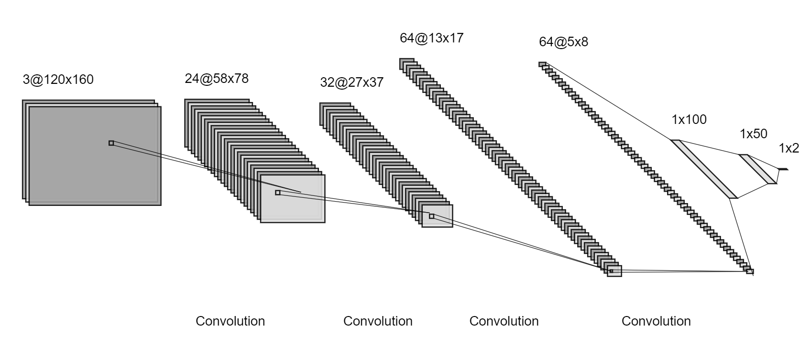

Guide For Developer
Show you the detail of HydraMini in Host-Part including preprocess, model structure, what is DPU and graph_input_fn detail.
Preprocess Edit
Read the file process_img.py and what you need to edit is the function image_handle(), you can do anything you want to the images in the function. Now the function is:
def image_handle(img):
return (img[CUT_SIZE:,:])/255.0-0.5
img[CUT_SIZE:,:]returns a image without CUT_SIZE header lines. /255.0-0.5 makes the image RGB values range from -0.5-0.5.
Network Structure
The following picture shows the network structure now. 
- You can define your own network structure in
build_model()and your own compiling features intrain_model(). Also all the variables in it can be set as you wish but I recommend you read the code carefully and think twice before you edit. - If you want to do some changes to labels, you should edit
batch_generator(). Now the labels intrain.csvare the car's steer and throttle values. They both range from -1.0-1.0, before we put them into the model, we change them to 0.0-1.0 by(value + 1)/2.
What is DPU
The Xilinx® Deep Learning Processor Unit (DPU) is a programmable engine optimized for convolutional neural networks. The unit includes a high performance scheduler module, a hybrid computing array module, an instruction fetch unit module, and a global memory pool module. The DPU uses a specialized instruction set, which allows for the efficient implementation of many convolutional neural networks.
graph_input_fn.py
This file is used to generate input data for quantization process. It reads data from the preprocessed image data in training_data_npz directory.